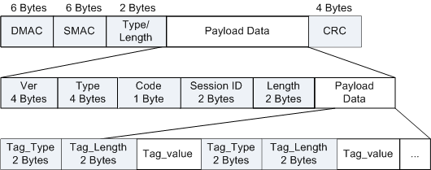

PPPoE是对PPP的扩展，它可以使PPP协议应用于以太网。
PPPoE帧格式如下：

PPPoE帧中字段解释：
| 字段 | 长度 | 含义 |
|---|---|---|
| DMAC | 6字节 | 以太网单播目的地址或者以太网广播地址（0xFFFFFFFF）。在Discovery数据包中，该域的值是以太网广播地址；在PPPoE会话流量中，该域必须是Discovery阶段已经确定的通信对方的单播地址。ry stage. |
| SMAC | 6字节 | 源设备的以太网MAC地址。 |
| Type/Length | 2字节 | 链路直接封装的协议，当值为0x8863时表示Discovery阶段；当值为0x8864时表示PPPoE会话阶段。 |
| Payload Data | 可变 | 以太帧的数据字段。The Ethernet payload. |
| CRC | 4字节 | 用于帧内后续字节差错的循环冗余检验（也称为FCS或帧检验序列）。 |
| Ver | 4字节 | PPPoE版本，必须设置为0x01。 |
| Type | 4字节 | PPPoE类型，必须设置为0x01。 |
| Code | 1字节 | 其定义在后面的Discovery和PPPoE会话中分别指定。 |
| Session ID | 2字节 | 是一个网络字节序的无符号值。其值在后面Discovery数据包中定义。对一个给定的PPPoE会话来说该值是一个固定值，并且与以太网Source_address和Destination_address一起实际地定义了一个PPPoE会话。值0xFFFF为将来的使用保留，不允许使用。 |
| Length | 2字节 | 该值是PPPoE的Payload长度。它不包括以太网头部和PPPoE头部的长度。 |
| Payload Data | 可变 | PPPoE的Payload，包含0个或多个Tag。一个Tag是一个TLV（Type-Length-Value）结构。 |
| Tag_type | 2字节 | 网络字节序。下表列出了各种Tag_Type和Tag_Value的对应关系和含义。 |
| Tag_Length | 2字节 | 是一个网络字节序的无符号值，表明Tag_Value的字节数。 如果收到的Discovery数据包中包含未知的Tag_Type，则必须忽略掉该Tag。It is an unsigned number in network byte order, indicating the length in octets of the TAG_VALUE. |
| Tag_value | 可变 | Tag的数据字段。Value of a Tag. |
| Tag_Value | Tag_Type | 含义 |
|---|---|---|
| 0x0000 | End-Of-List | 该Tag值表明是最后一个Tag。该Tag的Tag_Length必须总是0。 不要求使用该标签，它是为了向后兼容。 |
| 0x0101 | Service-Name | 该Tag表明后面紧跟的是服务的名称。
|
| 0x0102 | AC-Name | 该Tag表明后面紧跟的字符串唯一地表示了某个特定的接入服务器。 它可以是商标、型号以及序列号等信息的集合，或者该接入服务器MAC地址的一个简单表示。它不以NULL来结束。 |
| 0x0103 | Host-Uniq | 该Tag由主机用于把接入服务器的响应报文（PADO或者PADS）与主机的某个唯一特定的请求联系起来。Tag_Value是主机选择的长度和值，可以是任意的二进制数据。它不能由接入服务器解释。 主机可以在PADI或者PADR中包含一个Host-Uniq标签。如果接入服务器收到了该标签，它必须在对应的PADO或者PADS中不加改变的包含该标签。 |
| 0x0104 | AC-Cookie | 该Tag由接入服务器用于防止服务攻击。接入服务器可以在PADO数据包中包含该Tag。如果主机收到了该标签，它必须在接下来的PADR中不加改变的包含该标签。 Tag_Value的长度和值都是任意的二进制数据。 |
| 0x0105 | Vendor-Specific | 该Tag用来传送厂商自定义的信息。Tag_Value的前4个字节包含了厂商的识别码，其余字节尚未定义。 厂商识别码的高字节为0，低3个字节为网络字节序的厂商的SMI网络管理专用企业码。 不推荐使用该Tag。为了确保互操作性，在实现过程中，可以忽略Vendor-Specific Tag。 |
| 0x0110 | Relay-Session-Id | 该Tag可由中继流量的中间代理加入到Discovery数据包中。 Tag_Value对主机和接入服务器都是不透明。如果主机或接入服务器收到该Tag，则它们必须在所有的Discovery数据包中包含该Tag以作为响应。 所有的PADI数据包必须保证足够空间来加入Tag_Value长度为12字节的Relay-Session-Id标签。 如果Discovery数据包中已经包含一个Relay-Session-Id标签，则不允许再加入该标签。这种情况下，中间代理应该使用该Relay-Session-Id标签。 如果它不能使用现有的标签，或者没有足够空间来增加一个Relay-Session-Id标签，那么它应该向发送者返回一个Generic-Error标签。 |
| 0x0201 | Service-Name-Error | 该Tag典型的有一个长度为零的数据部分。 它表明了由于某种原因，没有理睬所请求的Service-Name。如果有数据部分，并且数据部分的头一个字节非0，那么它必须是一个可打印字符串，解释请求被拒绝的原因。 该字符串可以不以NULL结束。 |
| 0x0202 | AC-System-Error | 该Tag表明了接入服务器在处理主机请求时出现了某个错误。例如没有足够资源来创建一个虚拟电路。PADS数据包中可以包含该标签。 如果有数据，并且数据的第一个字节不为0，那么数据必须是一个可打印字符串，该字符串解释了错误的性质。 该字符串可以不以NULL结束。 |
| 0x0203 | Generic-Error | 该Tag表明发生了一个错误。 当发生一个不可恢复的错误并且没有其它合适的Tag时，它可被加到PADO、PADR或PADS数据包中。 如果出现数据部分，那么数据必须是一个解释错误性质的字符串。 该字符串不允许以NULL结束。 |
| 标准 | 描述 |
|---|---|
| RFC 2516 | A Method for Transmitting PPP Over Ethernet (PPPoE) |